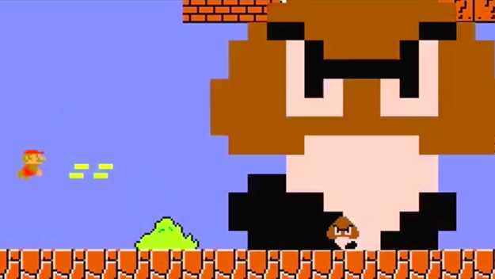

過去のアワード受賞者
2015年の受賞者
-
Tough Coded: Live
Fernando Sarmiento / Little Nando Argentina
BEST EXPERIMENTAL AWARD / BEST PERESENTATION AWARD
Tough Coded: Live is a Live Videogame Experience. It's sort of like an audiovisual experience. The idea comes from my VJ years.
What's your background in making games?
I've begun making games from a very early age, starting out writing text adventures in .BAT (in MS-DOS), later on working with the vintage Game Maker software, and then with Clickteam products, from Klik & Play onwards. My first game was created when I was around 11 years old during preliminary school. After that and throughout my teens, I've developed around 10 "shareware" and "freeware" games which were available online.
How much time did you spend working on the game?
Tough Coded has several versions. The LIVE version is the "latest" one, although there's also an online version which is also an MMO, or, what I like to call, an MMS -Massive Multiplayer Shmup. The LIVE version is merely 2 years old, but it must´ve taken me just 4, 5 months to do.
How did you come up with the concept?
Tough Coded: Live is a Live Videogame Experience. It's sort of like an audiovisual experience. The idea comes from my VJ years. I used to be a VJ for big events, such as Creamfields, working alongside world reknowned DJs such as JunkieXL, Hernan Cattaneo, Lexicon Avenue, Jimmy Van M, etc.etc. I was one day coding a sort of shmup game playing some dubstep music, and it suddenly hit me: hey! I should do a LIVE VJ game. It was a revolutionary idea for me, so I went right ahead and did it.
What development tools did you use?
I use all Clickteam products, Tough Coded is currently being coded in Fusion 2.5. I'm not a real programmer, as these softwares don't need for the user to know any code.
What were the significant changes between the presented games and games you developed before?
I used to make lots of games when I was a little kid, but for years I stopped making them. I only begun making games 2 years ago again (I'm 33 years old now). I think the main difference between my new games and my old games is that right now I focus 100% on gameplay. When I was a little kid, I focused 100% on ART, which is a fatal mistake in game design. Games must be FUN first, CUTE later.
What is your goal as a game developer?
I currently own a videogame company, and am doing various indie games on my own. My main goal as a game developer is to create awesome interactive and original experiences, but that also serve a commercial purpose. I love experimental things, but I love them more when they are part of an industry, create jobs and push the industry into the future. I also hate commercial projects that only "milk" the industry and don't help innovate on anything. I think that achieving that balance is quite difficult --but totally possible. I've been the CEO for PepperMelon (an animation company working for commercials in Argentina) for 8 years now, and I totally know that you can achieve commercial and GOOD things.
Please write a message to future SOWN attendees regarding your expectation and feeling about being selected to be a finalist.
When I created Tough Coded my dream was to showcase it in Japan. The reason? I LOVE Japan, I LOVE Tokyo (I´ve been there once) and I LOVE shmups. And, I know that japanese people love shmups. So I always thought that Tough Coded´s best crowd would totally be there, in Japan. I´m extremeley excited in showcasing my work in Asia, it would be the first Asian show, as the project has already travelled to US and Europe. Asia was the next goal. :)